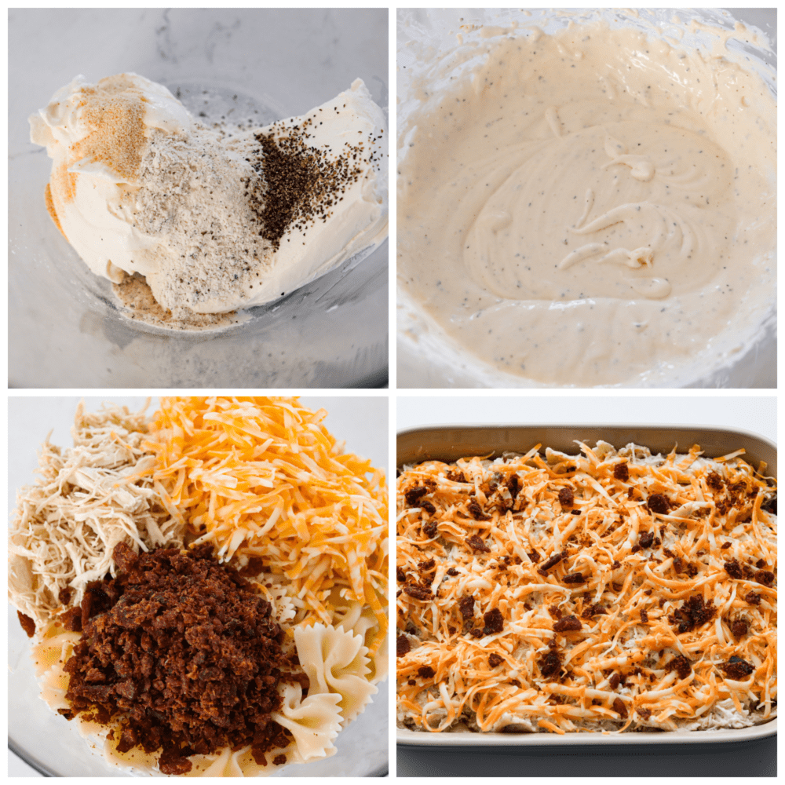

Crack Chicken Casserole
Crack chicken casserole is creamy, cheesy, bacon-filled goodness that your family is going to want on repeat. It’s the perfect comfort food and ready in 30 minutes!
Crack chicken is just too good. You can’t go wrong with juicy chicken in a creamy ranch sauce, smothered in melted cheese. You can make it in the slow cooker as well as in dip form! Crack chicken dip is a must-make for any party or get-together.
Ingredients
- Bowtie Pasta: You’ll want this to be cooked according to package directions and drained. You can also use elbow macaroni for a fun twist on mac and cheese.
-
Shredded Chicken: You can cook and shred your own chicken breasts or pick up a rotisserie chicken from the store for easy prep. You can also use chicken thighs if you prefer.
- Cream Cheese: Acts as the base for the creamy sauce.
- Dry Ranch Dressing: Dry ranch dressing mix gives the creamy sauce delicious savory flavor. You can use prepackaged mix or make your own blend free of preservatives using my recipe here.
- Onion Powder: Adds rich, savory flavor throughout the dish.
- Black Pepper Gives your casserole a boost of flavor.
- Half and Half: Adds the perfect creaminess!
- Bacon: Use precooked bacon or bacon bits for easy preparation.
- Shredded Colby Jack Cheese: Melty, flavorful cheese works the best here. You can substitute
- Green Onion: Chopped green onions make the perfect flavorful garnish!
Instructions
- Preheat Oven, Prep Casserole Dish: Preheat the oven to 375º Fahrenheit. Spray a 9×13 baking dish with non-stick cooking spray and set aside.
- Mix Sauce Ingredients: In a large bowl, combine the cream cheese, sour cream, ranch seasoning, onion powder, and pepper. Mix to combine using an electric hand mixer.
- Add Half and Half: Pour in the half and half and mix until incorporated.
- Combine: Fold in the cooked chicken, pasta, chopped bacon, and 1 cup of shredded cheese.
- Add to Casserole Dish, Bake: Transfer mixture to the prepared dish. Top with the remaining 1/2 cup shredded cheese. Bake uncovered for 25 to 30 minutes, until hot and bubbly.
- Add Garnish and Serve: Top with diced green onions and more chopped bacon if you would like!

Recipe Tips
- Use Rotisserie Chicken: Picking up a rotisserie chicken from the store makes this recipe so easy! I also love how tender and flavorful rotisserie chicken is, it makes this casserole even yummier!
- Use Homemade Ranch Mix: Prepackaged ranch mix works great if you already have it on hand, but if you really want to take this recipe up a notch, try making your own blend of ranch seasoning mix! It has the most amazing flavor and is free of preservatives and artificial flavors!
- Grate Your Own Cheese: If you want the best possible flavor for your crack chicken casserole, grate your own cheese! It melts better and has a creamier flavor.
Main Page Source